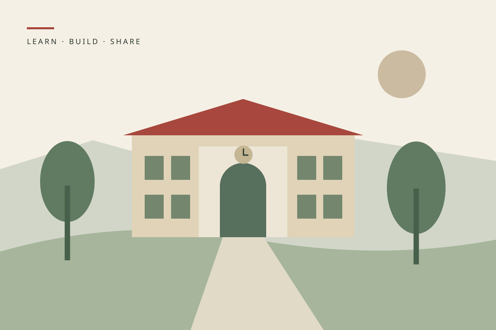
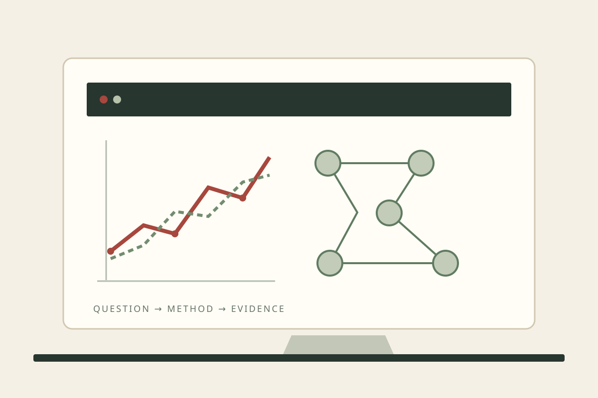
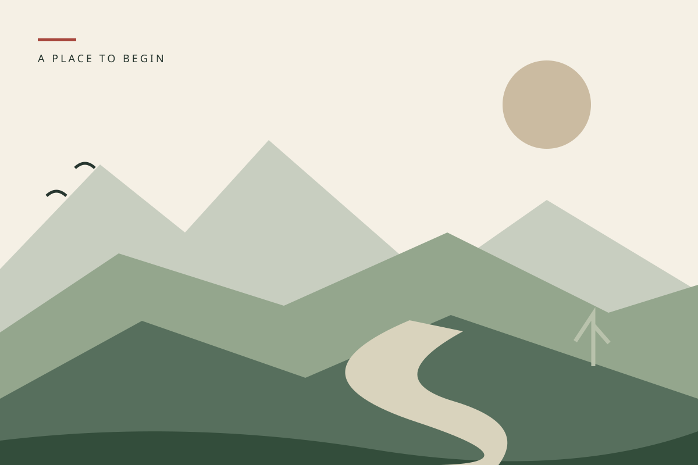

虚构示例 · 所有人物、学校、经历、成果与附件均为模板演示，请替换为自己的真实内容。

科研示例
研究方向：需求预测与资料检索 · 重点展示问题、贡献、比较与局限
虚构示例 · 所有人物、学校、经历、成果与附件均为模板演示，请替换为自己的真实内容。
把材料与结论对应起来
主页写明你做了哪些步骤；报告提供实验设置、结果和限制；附件入口链接到同一份材料。真实成果可补充规范引用和可核验链接，示例论文不具有真实学术身份。
项目示例
用问题、职责、动作、结果与证据，讲清你把什么做成了作品。
虚构示例 · 所有人物、学校、经历、成果与附件均为模板演示，请替换为自己的真实内容。
StudyLens · 学习资料检索原型（虚构）
【虚构示例】为模拟课程资料建立检索入口，提供排序结果与匹配依据。我负责整理查询类型、设计相关性记录表和分析失败案例；演示包含检索、解释和问题反馈三步流程。验证字段展示测试场景、失败样例与修改记录，所有材料均为教学占位。
CampusFlow · 校园服务分析看板（虚构）
【虚构示例】把模拟校园服务记录整理为可阅读的需求图表。我负责清洗规则、基线比较与报告组织，制作了从数据说明到结果解释的展示流程。完成后以同伴复现检查说明是否完整；演示图片展示结构，不对应真实产品运行数据。
阅读进度小工具（虚构）
【虚构示例】围绕“读到哪里、下一步读什么”的问题，设计记录、筛选和回顾三个功能。我负责页面结构与本地记录方案，并用空输入、重复记录等案例检查边界。展示时说明已完成部分和待改进项，让小作品也有明确的贡献与证据。
简历示例
林川 · 星桥大学（虚构） · 计算机科学与技术 · 2023–2027
虚构示例 · 所有人物、学校、经历、成果与附件均为模板演示，请替换为自己的真实内容。
如浏览器无法内嵌 PDF，请使用上方下载入口打开示例材料。
竞赛 · 荣誉示例
名称、范围、等级、时间与个人贡献，应与真实证明材料一致。
虚构示例 · 所有人物、学校、经历、成果与附件均为模板演示，请替换为自己的真实内容。
证书展示写法
示例：我在〔时间〕参加〔完整竞赛名称〕，担任〔职责〕，完成〔工作〕，获得〔真实奖项〕。点击证书应能查看对应材料。公开前可遮挡身份证件号、证书编号、条码、私人签名和不必要的联系方式。

成长故事 · 写作示例
从童年到大学的 25 个虚构片段，示范“场景—行动—反馈—反思”。
虚构示例 · 所有人物、学校、经历、成果与附件均为模板演示，请替换为自己的真实内容。
成长故事是理解个人方向的补充材料。先让读者在首页和作品页找到你的能力证据，再让他们按兴趣阅读这些片段。真实版本可以缩短早期经历，只保留能解释当前选择的内容。
童年
2005–2011 · 从好奇开始：记录一个具体场景。
阳台上的种子
【虚构示例】我在河湾城的浅水社区长大。五岁那年，家人在阳台给我留了一只旧花盆。我把两粒豆子分别种在有阳光和背阴的位置，每晚用彩笔画下叶子的样子。那时我并不知道什么是实验，只觉得同样的种子也可能有不同的变化。
几天后，我发现两盆土的干湿并不相同。原先以为只要比较阳光，后来才意识到自己忘了给它们一样多的水。那张歪歪扭扭的记录纸，让我第一次知道：想回答一个问题，要先看清自己做了什么。
一张不会走丢的地图
【虚构示例】浅水社区新建了阅览室，我总分不清哪条小路通向入口。家人带我走过一遍后，我把凉亭、长椅和门口的大树画在纸上，又用箭头标出拐弯的位置。第二次去时，我试着按自己的图走，终于找到了门。
我把地图给邻居看，对方却把一条装饰线当成了道路。我擦掉多余的花边，在真正的路旁写了“往这里走”。后来我愿意先让别人试一试自己的说明，再决定它是不是已经画好了。
积木桥的第二次搭建
【虚构示例】幼儿园组织了一次积木搭建，我想造一座能让小车通过的桥。第一座桥跨得很宽，车刚放上去，中间就塌了。我没有再往上堆积木，而是先把两边的支点往中间挪了一格。
新桥变短了，却能承受小车。老师问我为什么这样改，我只能比划着说“这里太空了”。许多年后，我仍记得那种把想法拆成一个小改变、再亲手验证的快乐。
轮到别人讲故事
【虚构示例】班级故事会上，我总急着把自己知道的结尾说出来。有一次同伴讲到一半停住了，我以为他忘词，抢着替他说完。活动后，他告诉我，那本来是他改写过的版本。
下一次我把想说的话记在一旁，等他讲完再问。故事的结局果然与我熟悉的不同。我慢慢懂得，合作不只是把自己的想法说清楚，也包括给别人留下把想法说完整的时间。
小学
2011–2017 · 从记录到表达：写出习惯如何形成。
借书卡背面的清单
【虚构示例】进入河湾城青禾小学后，我每周都去班级图书角借一本书。开始时只记书名，后来在借书卡背面加了两行：最想追问的问题，以及可以讲给同学听的一句话。
读到关于天气的章节时，我把“为什么云会移动”写在清单上，找老师借了一本图解书。清单并没有让每个问题都得到答案，却让我学会带着问题读下一本书。
一场没有预测准的雨
【虚构示例】自然课上，我和同学做了一周的天气记录。我依据前几天的云量，猜周五会下雨，结果那天一直晴朗。汇报时，我差点把“预测失败”从表格里擦掉。
老师提醒我，记录和猜测不是一回事。我保留了原始表格，在后面另写一栏解释预测。我第一次明白，承认一个判断没有成立，并不会让观察失去价值。
给校刊画一张流程图
【虚构示例】校刊征集“如何借阅班级图书”的小文章，我写了满满两页。同学看完仍问：已经有人借走的书该怎么办？我才发现自己遗漏了最常见的情况。
我重新画了一个流程图：查目录、登记、等待或借走、归还。编辑把它放在图书角旁边。看到有人照着箭头完成借书，我比看到自己的名字出现在校刊上更开心。
小组任务里的交接纸
【虚构示例】一次科学展示需要三个人完成模型和介绍。我负责模型，却没有告诉同伴哪些部分还没粘好，展示前一天大家重复做了一块底座。我们开始觉得彼此没有认真准备。
后来我在桌上放了一张交接纸，写上“已完成”“待确认”和负责人。第二次合作时，大家先看纸再开始做。它很简单，却让我们能把问题讨论在作品上，而不是相互猜测。
离校前的一封说明信
【虚构示例】小学毕业时，我整理图书角的记录，给下一届管理员写了一封说明信。我没有只写“认真负责”，而是列出失联图书如何追查、标签脱落如何补贴、每月哪一天核对清单。
整理时，我发现自己从喜欢借书，变成了愿意让借书这件事更顺畅。那封信没有奖状，却是我第一次把一段经历留下成别人可以接着使用的东西。
初中
2017–2020 · 从学习到验证：写出思考的过程。
错题不再只是红叉
【虚构示例】进入青禾中学后，作业内容明显增多。我曾把错题全部抄进笔记本，复习时却还是不知道先看哪一道。后来我给错误加上三个标签：概念不清、步骤遗漏、计算疏忽。
每周我只挑一种常见原因重做，并写下检查方法。笔记变薄了，我也能说清自己正在解决哪个问题。学习开始从“花了多少时间”变成“哪一种错误少了”。
第一段会报错的程序
【虚构示例】信息课上，我尝试写一个计算读书时长的小程序。输入整数时一切正常，输入带小数的时间却出现报错。我一遍遍重跑，直到发现读取和计算使用了不同的数据类型。
修好后，我专门输入空白和负数，程序又出了新问题。这次我开始在纸上列出输入情况，再逐项修改。它只是一段练习代码，却让我对“程序能运行”和“程序能被别人使用”的差别有了认识。
实验桌上的两份记录
【虚构示例】物理小组做摆动实验时，两位同学得到的计时结果不同。我原本想取一个看起来合理的数字交上去，后来决定把两份记录都留下，并标明各自从哪一刻开始计时。
我们统一了起止方式，重新测量几次，再比较差别。报告最后多了一段“误差可能来自哪里”。我发现解释一次不一致，往往比写一个漂亮结论更能让我理解实验。
把问题问到具体一步
【虚构示例】准备一次课堂展示时，我始终说不明白图表中的趋势。第一次问老师，我只说“这道题不会”。老师让我指出已经理解的部分，我才意识到自己把全部疑问混在了一起。
第二次我带着标记过的图，问“为什么这里要比较变化量”。讨论很快有了方向。此后，我在求助前先写出已尝试的方法和卡住的位置，也更容易判断得到的回答是否解决了问题。
选课表上的两个问题
【虚构示例】初中最后一学期，学校提供科学实践和文学阅读两类拓展课。我都喜欢，却没有时间全部参加。我给自己写了两个问题：哪一类活动能持续投入？哪一类能留下可以反复修改的作品？
最终我选择科学实践，同时保留每周的阅读笔记。这个决定没有让我立刻找到职业方向，却让我开始根据实际行动安排兴趣，而不是把每种兴趣都写在同一张愿望清单上。
高中
2020–2023 · 从目标到执行：展示调整和取舍。
一周计划的空白格
【虚构示例】在河湾实验高中，我给自己排过一张从早到晚的学习表。第一次执行就被一项临时作业打乱。我补不完所有格子，反而不愿再打开计划本。
后来我每天只确定两项主要任务，并留出一段空白时间。周末复盘时，我记录未完成的原因，不把它们都归为不够努力。计划开始成为帮助我做选择的工具，而不是给自己打分的表格。
一张图表里的不同声音
【虚构示例】班级为阅读活动选择时间，我整理了一张问卷图表，认为周末最合适。讨论时，同学指出问卷没有给需要照顾家人的人留出其他选项。我的结论看起来清楚，输入却并不完整。
我们补充选择项，再讨论两种可行时段。我在展示时说明了数据收集的范围。那次经历让我愿意先问“这张图漏掉了谁”，再把图表当成决定的依据。
一次被缩小的社团项目
【虚构示例】科技社想做一个完整的校园生活应用，我负责首页和信息整理。列完功能后，我们发现成员的时间和经验都不足以支撑原计划。我建议先只做社团活动日历。
我们完成了添加、查看和修改活动三个动作，并让社团成员试用。原先的“大作品”缩成一个小工具，却第一次有了连续使用的反馈。我开始重视能交付的范围，而不仅是想法的数量。
讲解之前先做一遍
【虚构示例】我为低年级同学准备一场编程入门分享，最初的幻灯片放了许多概念。试讲时，一位同学在安装环境的步骤就停住了，我才发现自己默认每个人都已经准备好。
正式分享前，我用一台空白电脑从头操作，补了检查清单和常见问题。分享中有人提问，我也学会停下来，让他们先把手边的步骤完成。讲解开始以听众能做到什么为标准。
志愿清单里的专业问题
【虚构示例】整理升学意向时，我把曾经做过的事情写在一页纸上：记录数据、制作流程图、编写小工具、收集使用反馈。我发现自己更愿意继续研究如何让一个想法成为可检验、可使用的系统。
我把计算机科学与技术作为下一阶段的学习方向，并列出需要补上的数学和编程基础。这个决定并不是对未来的保证，而是根据已有体验选择一个值得深入尝试的起点。
大学
2023–2027 · 从作品到证据：让方向和贡献可被检查。
进入星桥大学的第一份清单
【虚构示例】2023 年，我进入虚构的星桥大学信息工程学院，学习计算机科学与技术。最初一个月，我列出课程基础、作品练习和阅读三条线，每条线只安排一个能够持续完成的小任务。
我用课程笔记连接基础概念，用每周一次的小练习检验理解，并记录读不懂的地方。清单后来几次修改，但它让我能把新环境中的机会与自己的时间放在一起考虑。
课程代码变成一份可复现报告
【虚构示例】完成数据分析课程后，我没有只保存最终图表，还整理了数据来源说明、运行环境、处理步骤和失败的尝试。最难的一步不是继续调参数，而是说明每张图究竟回答了哪个问题。
我邀请同学照着说明运行，对方发现一处路径依赖。修改后，报告能够从头重新生成。这件小事让我开始把复现说明视为作品的一部分，后来也沿用了相同的实验记录结构。
CampusFlow 的基线先行
【虚构示例】在虚构的 CampusFlow 课程研究中，我尝试预测校园服务的模拟需求。第一版模型加入许多特征，却没有与简单方法比较。我先暂停改进，建立按历史均值预测的基线，并固定训练和测试的划分。
后续每次修改都记录同一组指标，同时保留没有改善的实验。最终报告重点解释比较是否公平、不同时间段是否有差异。它是教学用的研究示例，没有真实投稿、录用或发表记录。
StudyLens 的一次失败检索
【虚构示例】虚构的 StudyLens 项目用于检索模拟学习资料。我负责整理查询案例和排序解释。一次测试中，系统把包含相同关键词的材料排在最前，却没有回答提问者真正关心的概念。
我们按问题类型整理失败案例，在解释中加入匹配依据，并重新检查相关性判断。展示里保留了一组仍然容易混淆的查询。这个教学示例帮助我练习把模型输出与用户需求放在一起分析。
同一个作品的三种介绍
【虚构示例】准备一次模拟升学与求职展示时，我给同一个资料检索作品写了三种介绍。面向研究交流，我先讲问题和实验；面向学习规划，我先讲课程基础；面向工程岗位，我先讲交付的功能和验证过程。
作品没有变化，事实也没有变化，只是把证据的顺序调整了。我删掉无法在面谈中解释的词，留下能展开说明的工作，并为每段描述标明对应的报告页或截图。
把未完成也留在主页上
【虚构示例】回顾本科阶段时，我为主页列出已经完成的作品，也写下一项仍待验证的想法：让资料检索在更少的标注条件下保持稳定。我把它标为“计划”，而不是提前写成成果。
在这份虚构模板里，我想呈现的是方向如何形成、工作如何得到检查，以及还需要学习什么。真正使用时，我会用自己的材料逐项替换，让每一句能力描述都能找到对应的经历或作品。
使用与写作指南
先确定读者，再整理真实材料，最后替换示例并检查。
虚构示例 · 所有人物、学校、经历、成果与附件均为模板演示，请替换为自己的真实内容。
01 · 用一句话确定主页的方向
写法：我正在〔学习 / 研究方向〕，已通过〔代表作品或经历〕积累〔具体能力〕，希望继续〔目标〕。首页保留一句定位、2–3 个代表成果和清楚的联系方式。
先制作事实清单：教育背景、课程、研究、项目、荣誉、个人职责、时间和对应材料。优先选择最相关的 3 项成果，不必把所有经历放到首页。
02 · 面向保研：问题、贡献和研究匹配
先写研究兴趣和已有基础，再精选研究、复现或课程报告。每项用“问题是什么—我负责什么—如何验证—还存在哪些限制”四句话组织，附可阅读的报告或代码说明。
针对目标研究方向调整成果顺序，解释自己的经历为何能支撑下一步研究。没有论文时展示可靠的实验或课程成果；真实材料的投稿、在审、录用、发表状态要分别写清。
03 · 面向考研：基础、复试表达和可展开的作品
将专业课程、基础技能和一两项代表作品放在前面。每项准备一分钟介绍，并能继续回答实现选择、遇到的问题和自己的职责。初试成绩、排名等信息只有在真实且适合展示时填写。
成长故事选择能说明学习方法或专业兴趣的片段，避免挤占作品展示。主页内容需与简历、自我介绍一致；具体招生要求应按目标单位当前公布的信息准备。
04 · 面向求职：角色、交付和验证
根据岗位关注点调整顺序。工程岗位先展示可运行作品、负责模块、技术选择与测试；分析岗位先展示问题定义、处理过程、验证方法和结论如何被使用。
每项经历可写为“我负责〔职责〕，为〔对象〕实现〔功能或工作〕，通过〔方法〕检查〔结果〕”。量化结果注明时间、样本与比较范围，团队成果标清个人贡献，保留可公开的截图或材料。
05 · 成长片段：把故事写到行动上
每篇选一个事件，用场景开头，交代困难或疑问，再写自己的动作、收到的反馈和后续变化。先写约 200–400 字，再删去与这一事件无关的背景。
可以保留不确定、失败和求助，但要说明接着如何行动。童年到高中不必每章都保留；公开主页优先选能解释当前方向的故事。以上 25 篇均为新创作的虚构写法示范。
06 · 编辑文本与基本资料
点击侧栏底部“编辑示例”，在“资料与链接设置”中替换姓名、学校与专业介绍、联系邮箱和简历 PDF 路径；正文中带编辑框的内容可直接修改。保存用于保留本浏览器中的修改，导出 HTML 用于生成可分享的页面文件。
纯文本编辑只修改文字，不会自动更换图片或文件。其他附件可先用同名、同格式的真实材料替换；使用新文件名时，在 HTML 中搜索原示例文件名并更新路径。修改后的链接和按钮都要逐个打开确认。
07 · 替换图片、证书、论文与简历
模板材料位于 assets/template/：resume-sample.pdf 为简历、transcript-sample.pdf 为成绩单、paper-one-sample.pdf 与 paper-two-sample.pdf 为论文样稿，其他 SVG 为证书、项目演示与场景插画。复制整个文件夹后再替换，保留一份原始示例。
建议将真实附件另存为短文件名放到 assets/ 内，再更新对应相对路径。证书可使用 PNG、JPG、WebP 或 SVG；论文、成绩单和简历用 PDF。图片路径位于 src，下载路径位于 href，材料预览路径位于 openCert 的参数中；简历路径也可在设置面板修改。使用真实文件格式，不要仅改扩展名。
08 · 分享之前，清理隐私与示例
检查姓名、联系方式、学校、时间、正文、PDF、图片与文件名。删去公开展示不需要的住址、学号、身份证件号、证书编号、条码和其他人的私人信息；公开邮箱可用专门的联系地址。
所有虚构学校、论文、奖项、经历与统计字段都应替换或删除。确认内容与证据一致后再调整“虚构示例”标识；保留真实未完成事项的准确状态。查看附件本身，避免只检查网页文字。
09 · 导出、预览与后续维护
点击“保存”后，再“导出 HTML”。将导出的 HTML 与 assets 文件夹一起放在同一目录，再重新打开预览；只分享 HTML 不会自动携带附件。换电脑或换浏览器时，以导出的文件和附件为准。
最后检查首页、研究摘要、每个证书、简历预览、下载按钮、成长故事前后导航和手机菜单。每新增一个成果，同步更新简历与主页，核对时间、职责、状态和附件；没有变化的内容无需制造新动态。